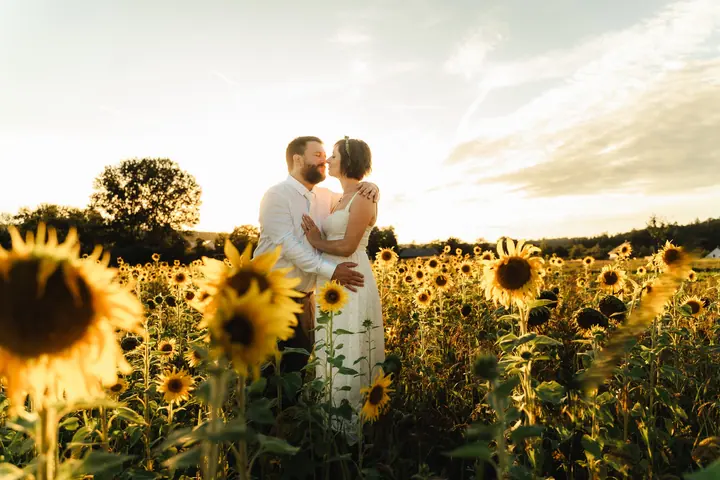
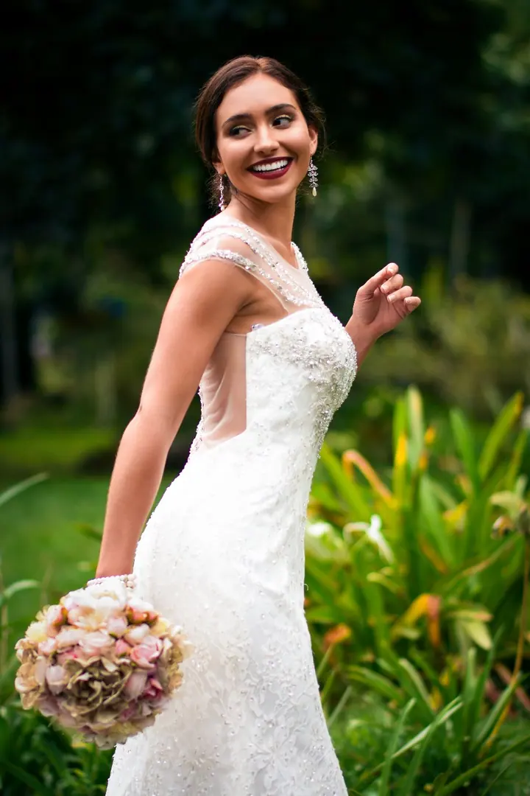
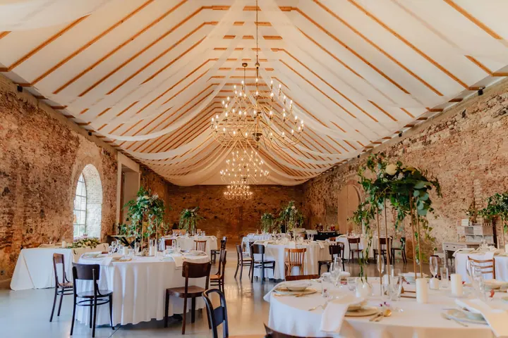

jedna
Svatební reportáž
Fotím váš den tak, jak plyne a jak si ho užíváte vy i vaši hosté, v Praze i na svatbách kdekoliv po Evropě. Nestojím stranou, jsem součástí dění a sklenku bublinek s vámi nikdy neodmítnu.


Jmenuji se Šárka Jelenová a fotím svatby v Praze i kdekoliv po Evropě. Váš den vyprávím tak, jak opravdu plyne: hravě, nenápadně a bez strojeného pózování, abyste si ho užili vy i vaši hosté.
Více o mně
Co fotím
jedna
Fotím váš den tak, jak plyne a jak si ho užíváte vy i vaši hosté, v Praze i na svatbách kdekoliv po Evropě. Nestojím stranou, jsem součástí dění a sklenku bublinek s vámi nikdy neodmítnu.
dvě
Zásnubní focení a love stories mám moc ráda. Je to i ideální příležitost se poznat a zjistit, že před foťákem nemusíte být nervózní.
tři
Přirozené focení rodin a budoucích maminek bez strojeného pózování. S rozesmáním dětí mi pomáhá moje prasátko Minty.
Osobní portréty, business portréty i fotky pro vaši značku. Fotografie je pro mě univerzální jazyk a ráda hledám cestu ke každému, kdo stojí před objektivem.

Užijte si den, ne pózování.


Za objektivem
Začínala jsem jako redaktorka v Sedmičce Mladé fronty DNES a v Budějcké Drbně. Tam jsem si poprvé vyzkoušela reportážní fotografii a foťák mi přirostl k ruce i k srdci.
Po přestěhování do Londýna jsem pochopila, že fotografie je univerzální jazyk. Fotila jsem lidi z Kuvajtu, Indie, USA, Kanady i Ghany, indická zasnoubení, tajné žádosti o ruku, pravoslavné křtiny i módní editorialy. Naučilo mě to domluvit se s kýmkoliv.
Na svatbě nesedím stranou jako u televize. Snažím se být součástí dění, aby vám bylo dobře před objektivem i za ním. Ze svého honoráře daruji 5 % organizaci, která chrání mladé dívky před nechtěnými sňatky. Přeji si, aby se lidé brali dobrovolně a z lásky.
Šárka
Než si termín zarezervujete, potkáme se osobně nebo aspoň online. Potřebujeme zjistit, jestli si sedneme, a já se ráda dozvím všechno o vaší svatbě.
Vše podstatné sepíšeme do smlouvy, abyste přesně věděli, co ode mě dostanete. Termín pak zajistíte zálohou ve výši 30 % ceny.
Nejsem jen fotografka, ráda vám budu i průvodkyní. Dostanete ode mě tipy a rady, aby byl váš den v klidu a bez stresu.
Fotím den tak, jak plyne, a vy se bavíte místo pózování. Hotové fotky obvykle dostanete do dvou týdnů, u vyšších balíčků navíc pár ochutnávek hned druhý den.
Portfolio
Fotografie jsou ilustrační
Otázky
Ano, cestuji moc ráda a fotím svatby a elopementy po celé Evropě. Pro destination svatby připravuji balíčky na míru, tak mi napište, o čem sníte.
Co nejdřív, vím, jak se na ně těšíte. Obvykle do dvou týdnů od svatby, u druhého a třetího balíčku dostanete pár fotek už druhý den.
Ano, u větších svateb to dokonce doporučuji. Spolupracuji s několika spolehlivými profesionály, druhý fotograf je za příplatek.
Muselo by jít o opravdu vážný důvod a dělám vše pro to, abych byla před vaší svatbou fit. Kdyby se to přesto stalo, zajistím za sebe rovnocennou náhradu, které věřím, a konečné slovo budete mít vy.
Napište pár vět o tom, co si představujete. · +420 705 980 044